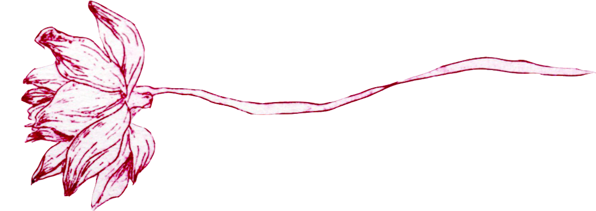
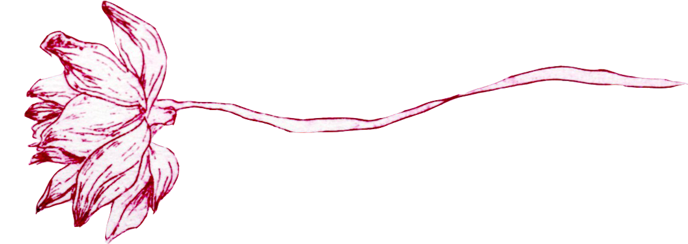

十二月二十九日 雨 我去向梦幻的疆界。
「最近我老是做梦，梦里面有海的咸味。我一直望着对岸，对岸像希区柯克电影里的镜头一样，不断不断地拉远，而我还站在原地。可是同一时刻我又觉得自己好像快要被溺死一样的窒息。我想逃，又想要跳进去，让海把我卷去遥远的对岸，让我一千一万个世纪地漂流，直到精疲力尽的身体荡到岸上。海的那边有我所失落的东西，我好想念，好想念，又抓不住。梦里我的身躯由文字构成。梦里我的世界也由文字构成。梦里我不断地写，不断地幻想那片海并不存在。梦的感觉几乎比真实还要真实，醒来的时候，脸上也有海的咸味。」
十二月二十六日 雾 我是孤傲的蔷薇。
「前段时间，我在校长室遇到阿靖，他低着头，只有在与我擦身而过的时候抬头看了我一眼，他的眼眶红红的，好像是哭过，可是面容却是舒展开的。我从小学开始，记忆里从没见到阿靖哭过，就是在小时候那些男孩子抓着他的头发把他锁进女厕所问他是男孩还是女孩的时候他都没有哭。我一直觉得他好可怜，又好勇敢，但还是好可怜。有的时候我也觉得自己可怜，但又觉得没有他可怜。可是也没有他勇敢。那天之后他就没有来学校了，美云跟我说他那天是去办理退学。我不知道他不上学以后要去哪里，很难想象他那样一个纤细又漂亮的男孩子，要像我们家里那些辍学去工作的小孩一样，晒得黑黑的，手上长满茧子。」
十二月三日 晴 我看见晚风吻尽荷花叶。
「最近在电视上看到《孽子》的电视剧，那些男孩子都好美，就像小说里写的一样，是“青春鸟”。我有时会想阿靖是不是也是他们中的一只。看到金勤饰演的小玉唱日语歌，我感觉那好像是另一个世界，他脸庞散发出乳白色的光。去书店买了小说来看，里面“艺术大师”说，文明和教育，把那些大学生的生命力都泯去了——他们象甚么，一束塑胶花！我想，我也是一朵塑胶花。阿靖一定不是。阿宏，他也不是。看到最后，小玉终于如愿以偿，去了日本。向阿青寄来明信片，说：“你不是老笑我做樱花梦吗？现在我的梦里真的有了樱花了。明年春天，樱花开的时候，我会穿了和服在樱花树下照张相片寄给你。”我读了，也为他感到开心。」
十二月十一日 晴 如何找寻我的明天。
「在整理乐团排练室的时候，发现陈学姐落下一把吉他。打电话给她，她也没有接，好几天之后才回复我的留言。我问她最近好吗？她说很好，可是听起来并不那么快乐的样子。她说吉他不用还给她了，如果学弟学妹要用就留在学校，不然我拿走就好。以前我最喜欢来看学姐排练，我觉得音乐是一件好了不起的事，她弹吉他的时候感觉这个世界都有变好一点点。排练完她就站在一边抽烟。我总是不敢靠近，直到有一次学姐主动和我讲话，我就问，学姐以后会变成大明星吗？她没有讲话，又吸了一口烟。毕业的时候她给我写了一张小卡片，说有时候会羡慕我，我也不知道我有什么好羡慕的，那么平庸的一个人。那张卡片我一直压在书桌最底层。」
十二月六日 雨 我需要爱的慰藉。
「阿宏去美国了。我还是从同学那里听到。总是在想如果有和他道别就好了，可是又觉得好可笑，他怎么会要和我道别。但他一定有好好和美云道别吧，他们那么好，一定会很难过。我不知道是他和美云道别会更难过还是我没有和他道别会更难过。我又在想为什么我那么懦弱，喜欢他快要十年都没有能告诉他，他离开我还要为他哭。我还要猜他想起他在海北的童年和少年时代的时候，会不会想起我这样一个人。我还要祈盼能够在很多年以后的同学聚会上再见到他一次。」
十二月三十一日 晴 将我的手...紧握。
「妈妈好多年前送我的随身听终于坏掉了。之前我还在想，这个随身听的生命力怎么那么顽强，好像比我还要坚强一样。其实很多事情早就有预兆吧，就像这两个月听随身听的时候，声音总是闷闷的，像从另一个世界传过来的。但还是不舍得丢掉，总会想起收到它的时候，用它听的第一首歌是五月天的《拥抱》。那时候才刚刚念中学，只模糊觉得这首歌好美啊，最喜欢那句歌词，“那一个人爱我/将我的手紧握/抱紧我 吻我 爱别走”。不知道那个人什么时候会来到我身边，他还会来吗？」

 
